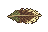
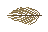

Revised candidate

Previous single-color version

Olive base, brown center, cream tips. Native 48×32 canvas; fitted 35×16. Native and 10× zoom.


Built-in imagegen edit. Saved prompt. Not installed in-game.